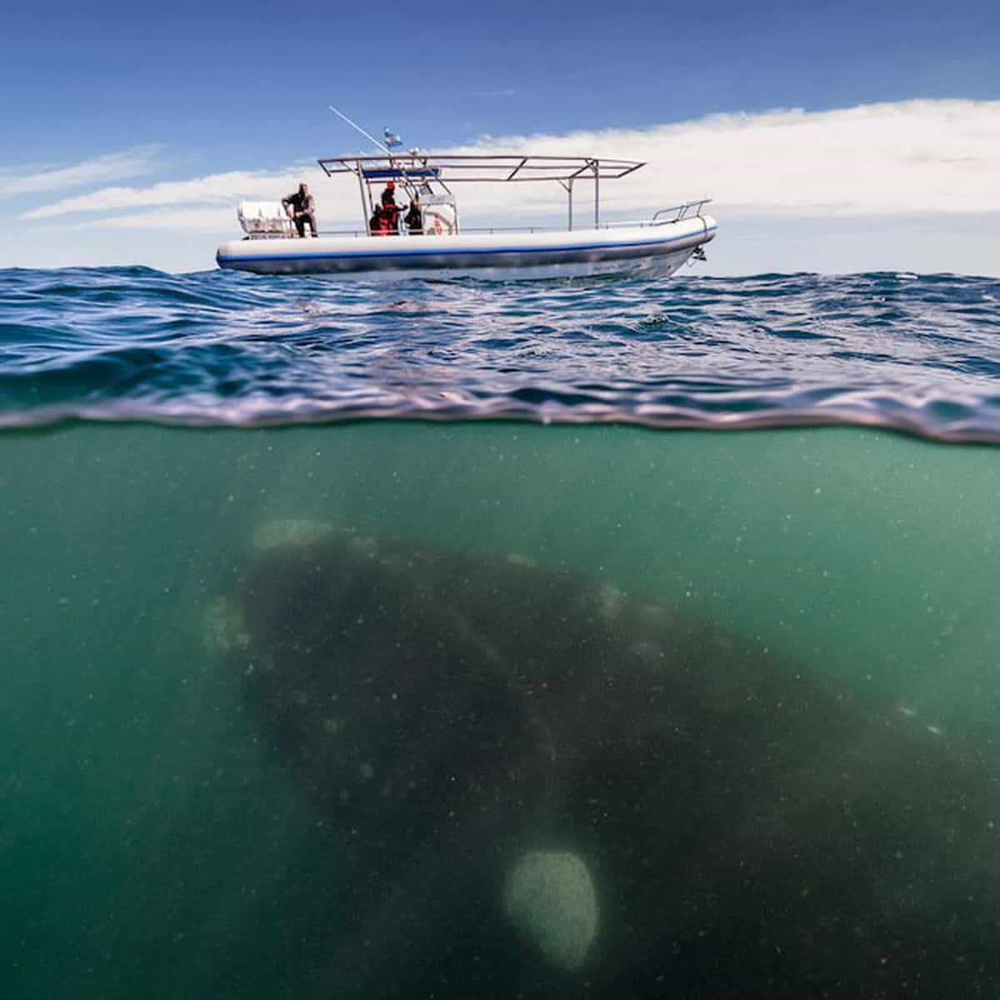

Over whale-med
The procrastinating pirate tried to rule the whole sea. She was a crew member of many ships. She thought this way she would for sure reach her dream of becoming the best pirate she could be. When one shipped docked, she would hop on the other. It took meticulous planning and timing to pull this off, but many times it didn’t work.
She would either not show up some days for her shift on deck or she would slack off on her duties. The crew members on all the ships she was a part of got very mad and disappointed. She learned that maybe she needs to pick only a few or one ship to belong to before she is forced to walk the plank.